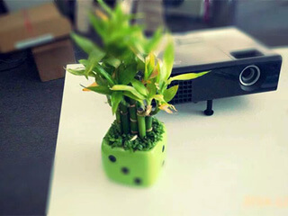

关于我
“累吗？累就对了，舒服是留给死人的。苦，才是人生！”懂得、后悔、努力，不算晚，人们都在说不要失去后才懂得珍惜。年轻时做什么，老了以后才不会后悔？趁现在，好好努力吧，不管结果怎样，结局应该不太坏！
微博：http://weibo.com/putins
QQ：897482342
个人博客：www.binjs.com
教育经历
泉州师范学院 | 软件工程专业 | 2011.9 - 2015.6
信 念：一直以为人与人、人与社会的融入，只要我们怀着一颗“纯粹”的心，你就会得到很多收获，快乐是需要分享的，简单一点。无畏的争斗、吵闹和喧嚣，那又怎样？我很喜欢许嵩《全球变冷》里的这么一句话：不必反反复复想太多 每天都要过的更洒脱，如果能够多一点点微笑，快乐也会多一点点围绕不要等到全球变冷才觉不妙。
我的工作经历

某司(2014.6-2015.6)
一直以来，努力、积极、乐观、拼搏是我的人生信条，我相信，我会一直努力下去，做好自己。
某司(2015.7-至今)
做事认真, 对待工作认真负责，
协调有较强的组织能力与团队精神
勤于学习能不断提高自身的能力与综合素质
熟练运用：PhotoShop 、HTML5开发、Web前端开发、会声会影、AE等常用软件
并且熟练操作常用软件工具…
我掌握的技能
勤于学习能不断提高自身的能力与综合素质、在前端的道路上不断摸爬滚打。有心，就有快乐！
PhotoShop HTML5 CSS3 JavaScript